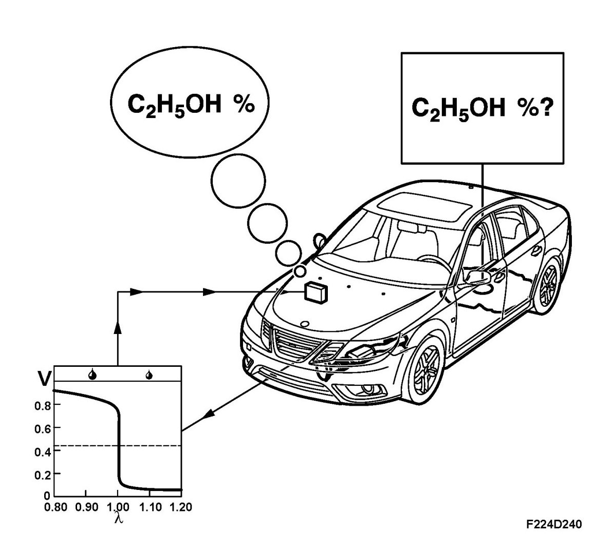
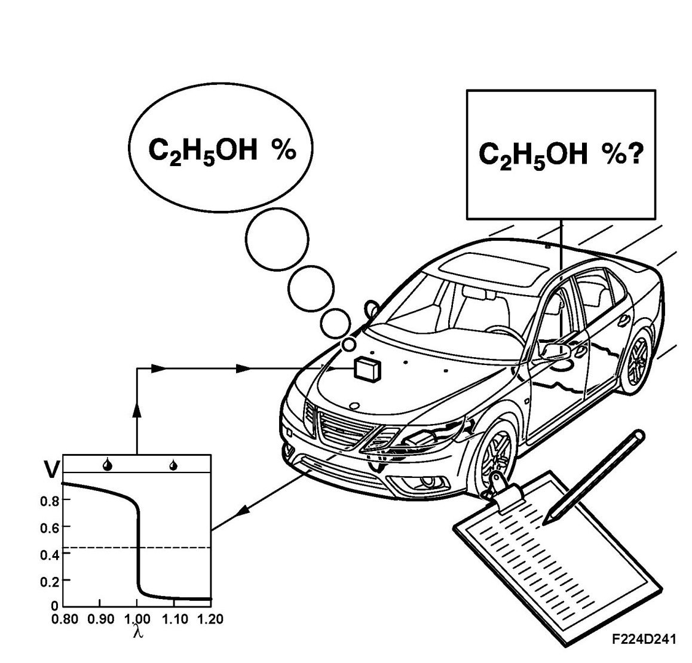
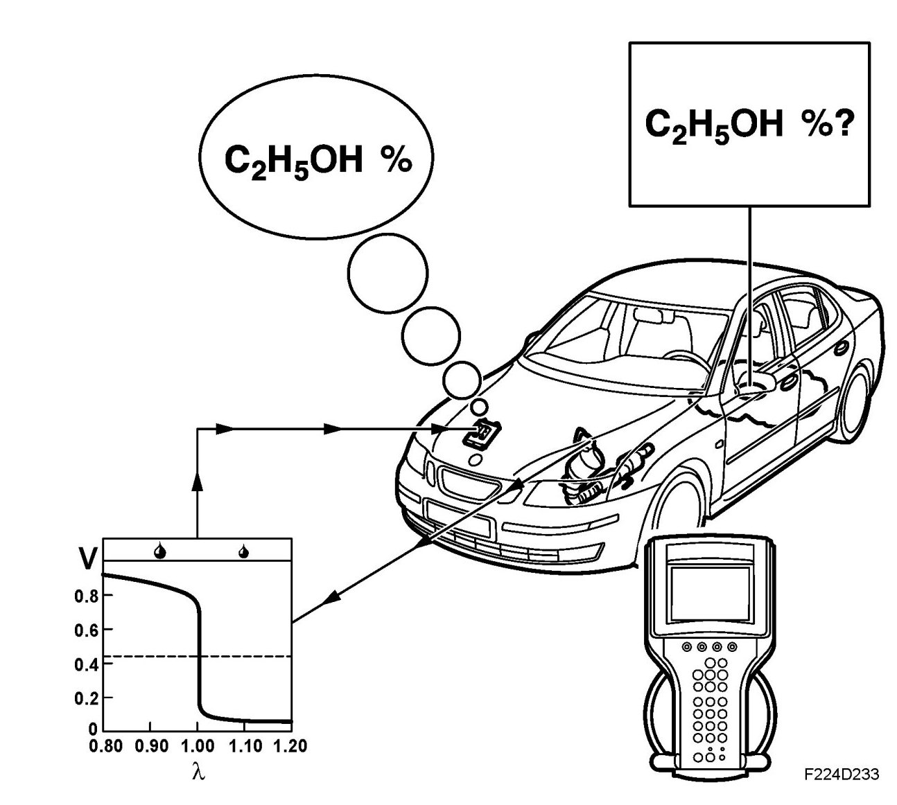
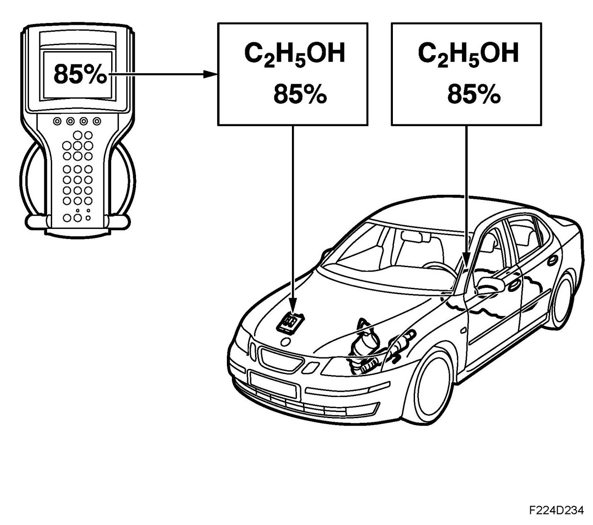
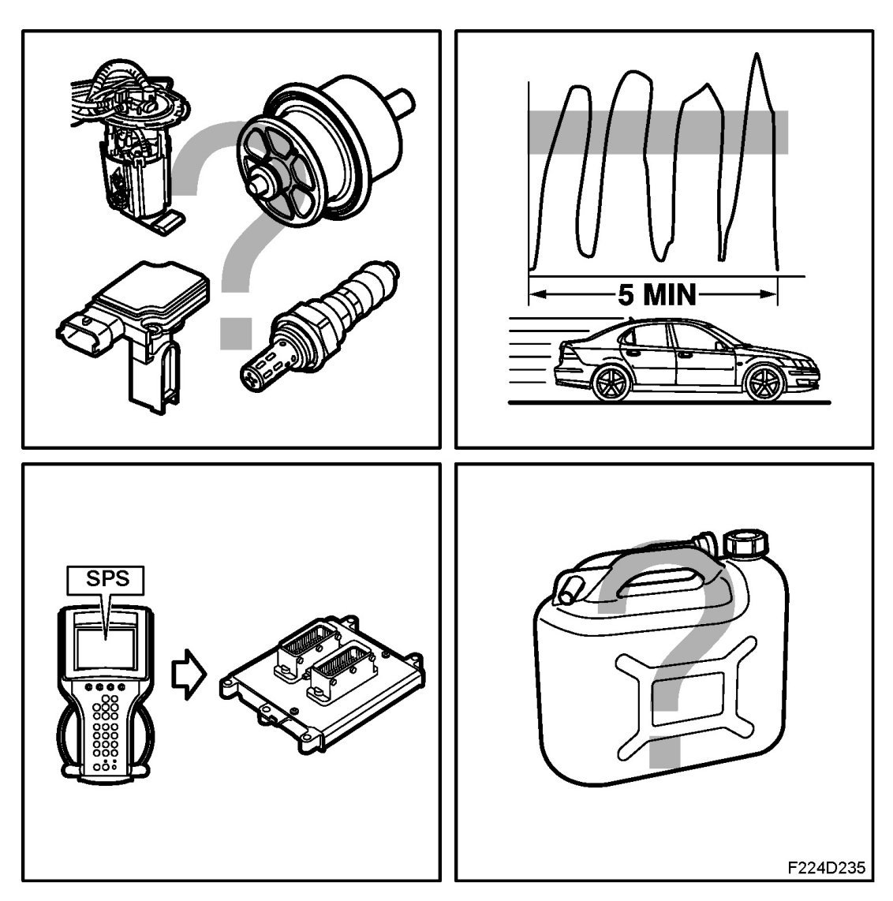

Ethanol Adaptation
Ethanol Adaptation
General
The engine management system adapts itself according to the ethanol content in the fuel and resets a number of parameters so that the engine shall run optimally. Ethanol adaptation takes place automatically after refuelling amongst other things.
However, in connection with repairs it may be necessary to force the engine management system into an automatic ethanol adaptation, this is performed with Tech 2. The ethanol content can also be entered manually using Tech 2.
An algorithm has been developed that uses the lambda sond's signal for calculating the current ethanol content in the fuel.

Function
The engine can be run on all fuel mixtures from pure petrol to pure E85. This means that the ECM must learn the mixture to be able to calculate the correct injection quantity. The ethanol adaptation works in a way whereby the ECM looks at the lambda control and analyses the deviation from the zero point in order to determine the current ethanol content in the fuel.
If the vehicle is run on pure petrol and then refuelled with E85, then lambda sond 1 (before the catalytic converter) will indicate lean running. The lambda control is then increased (increasing fuel quantity), at the same time the recalculation factor is decreased from 14.7 to a lower value, minimum 9.8. This continues until lambda sond 1 indicates that a mixture ratio of lambda 1 has been obtained. The recalculation factor is a measurement of the current ethanol content in the fuel. 14.7 means pure petrol, while 9.8 means that the ethanol content is 85%.
If the vehicle is run on E85 and then fully refuelled with pure petrol then lambda sond 1 will indicate rich running. The lambda control is then reduced (decreasing fuel quantity) and at the same time the recalculation factor is increased from 9.8 to a higher value, maximum 14.7. Exactly as normal, the lambda control should fluctuate around the 0% line.
Automatic adaptation
Adaptation of ethanol content will take place if one of the following has occurred:

- Fuel volume has increased with ignition on, compared with the fuel level when the ignition was last switched off.
- Fuel volume increases when the vehicle has been stationary for more than 11/2 minute with ignition on.
- Fuel volume less than 8 liters and lambda control deviates more than +/- 10 %.
- If the previous ethanol adaptation was interrupted due to ignition shut-off before it was complete.
- Following loss of +30 to the ECM.
- Following the clearing of certain diagnostic trouble codes in the ECM.
Automatic ethanol adaptation can take place during both at idling speed and while driving. Following automatic adaptation the ECM must not be disconnected or in any other way be deenergised. Otherwise the adapted value will not be stored in the memory. Instead the previous value for ethanol adaptation will be used.
It is therefore very important that the engine is run until it is warm (however at least 5 minutes) following refuelling with another fuel, so that an adaptation is completed. Driving should be calm (lambda controlled). If consideration is not made of this a subsequent cold start could be difficult due to incorrect adaptation.
Forced adaptation
Using the diagnostic tool the ECM can be forced to perform ethanol adaptation. This may be necessary, for example, following a repair that caused an incorrect ethanol adaptation and the fuel's ethanol content is not known.

Connect the diagnostic tool and contact Trionic, select the BioPower menu, and force ethanol adaptation. The engine's coolant temperature must be in excess of +60 degrees C in order that adaptation should start. The diagnostic tool shows the ongoing status. If the temperature is too low then this is indicated by the display. Forced ethanol adaptation requires approx. three minutes and can be performed at idling speed or while driving.
Following forced adaptation the ECM must not be disconnected or in any other way be deenergised. Otherwise the adapted value will not be stored in the memory. Instead the previous value for ethanol adaptation will be used.
Manual adaptation
Using the diagnostic tool the relevant ethanol content can be entered manually.

One occasion when it is advantageous to enter the ethanol value manually is following replacement or SPS programming of the ECM. The ethanol value for a new control module or following SPS is 0%. If the composition of the fuel is known with regard to ethanol content then that value is programmed. If the ethanol content is unknown then it can be advantageous to set the ethanol value to 50%. Following which, start the engine and carry out a forced ethanol adaptation. By setting the ethanol value to 50% the engine will run relatively cleanly irrespective of the current ethanol content in the fuel. Note that ethanol adaptation takes place when the engine's coolant has reached +60 degrees C.
Incorrect adaptation
Under certain conditions the current adapted ethanol value may be incorrect. Examples of instances that result in an incorrect ethanol value:

- Component fault: mass air flow sensor, oxygen sensor 1, fuel pump, fuel pressure regulator and fuel level sensor.
- Air leakage in the induction system.
- Voltage drop (+30) before writing to ROM memory takes place.
- Hard driving after refuelling with another fuel, (driving outside lambda controlled range).
- Short driving distance after refuelling with another fuel (cold engine or driving time under 5 minutes).
- SPS programming without entering the current ethanol content.
- Changing fuel in connection with pump replacement for example, (draining 30 liters of E85 that is replaced by 30 liters of petrol)